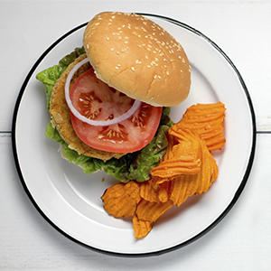

Opskrifter
Cremet græskarsuppe

Ingredienser til 4 pers.
- 600g hokkaido græskar
- 100 g løg
- 1 fed hvidløg
- 5 dl hønsefond
- 1 dl fløde
- 10 g salt
- 3 spsk citronsaft
- Frikkværnet peber
- Chipotle chili peber
- Fetaost
- Smør (til stegning)
Såden gør du:
Skræl græskarret, og skær det ud i grove tern (gem et lille råt stykke til pynt). Pil og hak løg og hvidløg. Svits løgene i smør, og tilsæt de udskårne græskar. Tilsæt hønsefond, og lad det koge i 15 minutter. Kom herefter fløde i, og kog i yderligere 5 minutter eller længere til græskaren er mør. Blend suppen til en glat og cremet masse. Juster konsistensen med vand, hvis den er for tyk. Smag suppen til med salt, peber, citronsaft og chipotle chili peber, så balancen bliver helt rigtig. Det søde græskar skal krydres godt, så suppen ikke bliver for tung.
Server suppen rygende varm med ristede græskarkerner og fetaost.
Kikærtebøffer til vegetarburger
Ingredienser til 4 pers.
- 240 g kikærter, i blødsat og kogte (svarende til en dåse skyllede kikærter)
- 1 æg
- 1 rødløg, lille
- 3 fed hvidløg
- 1 tsk stødt spidskommen
- 1 tsk stødt koriander
- 1⁄2 tsk chiliflager, evt. lidt mere
- 1 tsk flagesalt
- Friskkværnet sort peber
- 2,5 spsk rugmel eller havregryn
- 3 spsk olivenolie
- 1⁄2 dl rasp
Sådan gør du:
Kom alle ingredienserne i en foodprocessor eller minihakker - og kør til 'farsen' er jævn og det er mikset godt sammen.
Sæt gerne på køl, hvis der er tid, det giver havregryn eller mel mulighed for at absorbere lidt af væden.
Form kikærtebøfferne ved at dele farsen i fire, kom godt med olie på hænderne, form hver bøf til en rund kugle, som trykkes flad på en tallerken med rasp. Vend kikærtebøffen, så den er dækket med rasp på begge sider og er formet pæn flad og rund.
Læg alle fire kikærtebøffer på en bageplade med bagepapir, pensl evt med mere olie og bag i en forvarmet ovn ved 200 grader varmluft i 20-30 minutter til de er sprøde og gyldne i kanterne.
Marokkansk fladbrød

Ingredienser til 6 pers
- 1 kg ubleget hvedemel
- 14 g tørgær
- 30 g salt
- 1⁄2 l lunkent vand
- 30 g sukker
- 1 dåse kikærter
- 1 spsk. korianderfrø
- 1 tsk. spidskommen
Sådan gør du:
Bland mel, gær, salt, sukker og vand og ælt det til en dej. Hæld vandet fra kikærterne og læg dem midt i på dejen. Knus korianderfrø og spidskommen i en morter.
Mas kikærterne og ælt dem og krydderierne ind i dejen. Når dejen er blevet glat, rulles den sammen til en pølse. Skær dernæst dejen i skiver - der bliver omkring 13 brød af denne portion. Rul skiverne ud, så de bliver helt flade. Bag de flade brød direkte på risten ved 240-250 grader i 3-4 minutter. Man kan fryse brødene, inden de bliver bagt.